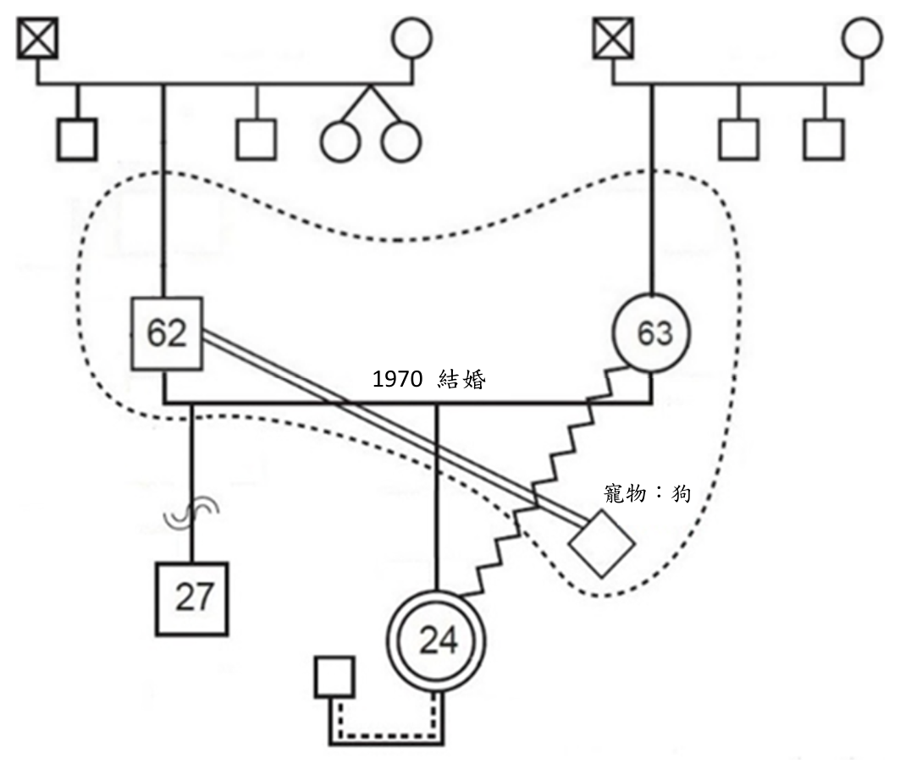

開卷有益 ／
社會工作師 ／ 社會工作直接服務 ／ 113 年第 2 次113 年第 2 次社會工作師社會工作直接服務試題與答案
這一頁是民國 113 年第 2 次社會工作師社會工作直接服務的整份歷屆試題，共 40 題，題目與標準答案出自考選部「國家考試試題及測驗式試題答案」開放資料，其中 40 題附有詳解。以下逐題列出題幹、選項與答案；要計時作答或記錄成績，請用線上練習。
考選部原始場次代碼：113100
線上作答這一科 →
全部 40 題
第 1 題
家長致電給社會工作者，陳述其第二個孩子發燒，需立即就醫，但目前家中只有他一個成人，他無法一個人帶二個幼兒出門。因此社會工作者立即連繫志工，請志工陪同此服務家庭的家長帶孩子就醫，並協助照顧另一名幼兒。依上述情境，社會工作者此行為充分發揮了社會個案工作者的那個角色？
（A） 諮詢者（B） 仲介者（C） 教育者（D） 使能者答案：（B）
詳解與考點 正解：社工在案家無法自行帶兩名幼兒外出就醫的情況下，主動連繫並媒合志工這項外部資源，協助案家解決眼前的照顧與就醫需求，其核心行動是「連結案主與所需的外部資源」，正是仲介者（broker）角色的典型展現，本題選B。
A：諮詢者（consultant）角色著重提供專業意見、知識或建議供案主或其他專業人員參考，本題社工並非在提供意見，而是實際連結志工資源協助解決問題，與諮詢者角色不符。
C：教育者（educator）角色著重傳授知識、技巧，協助案主學習因應問題的能力，本題情境中社工並未進行知識或技巧的傳授，與教育者角色不符。
D：使能者（enabler）角色著重激發、增強案主自身解決問題的能力與動機，讓案主能靠自身力量處理困境；本題社工是直接連結外部志工資源代為協助照顧，而非啟發案家自身能力，與使能者角色不符。
本題考點：社會個案工作者角色（social casework worker roles）中的仲介者（broker），指連結案主與其所需之外部資源（如志工、機構、服務），與使能者、教育者、諮詢者等角色在功能上的區分。
第 2 題
對於綜融性（generic）個案工作的實施，下列組合何者正確？①個案工作的焦點是在社會功能的恢復，工作方法採取折衷方式 ②Mary Richmond 認為服務對象問題源於個人因素③個案工作是一個社會工作者指導服務對象努力的過程 ④個案工作者需具備同理心、尊重和真誠三種特質
（A） ①②（B） ②③（C） ③④（D） ①④答案：（D）
詳解與考點 正解：綜融性（generic）個案工作以恢復或增進服務對象的社會功能為焦點，方法上採折衷、整合取向，視個案需要彈性運用不同理論與技巧，①正確；個案工作者須具備同理心、尊重與真誠等核心助人特質，④正確，正確組合為①④，故本題選 D。
A：①②組合。②稱 Mary Richmond 認為服務對象問題源於個人因素，但 Richmond 強調社會診斷與人在情境中，重視個人與社會環境的交互關係，並非只將問題歸因於個人因素，②不成立，故①②非正確組合。
B：②③組合。②不成立（同上）；③稱個案工作是社會工作者指導服務對象努力的過程，但個案工作並非社會工作者單向指導服務對象努力的過程，而是工作者與服務對象建立專業關係、協同合作以共同解決問題的過程，③亦不成立，故②③非正確組合。
C：③④組合。③不成立（同上），故③④非正確組合。
本題考點：綜融性個案工作（Generic Casework）以社會功能恢復為焦點、採折衷取向，個案工作者須具備同理心、尊重、真誠三種助人特質；Mary Richmond 的社會診斷觀點強調人在情境中，而非個人因素論；個案工作為協同合作而非單向指導的過程。
第 3 題
下列何者為危機介入的首要前提？
（A） 盤點服務對象的優勢（B） 確認服務對象的安全（C） 協助服務對象進行探索（D） 拓展服務對象的社會資源答案：（B）
詳解與考點 正解：危機介入（Crisis Intervention）強調首要工作是確保案主的人身「安全」，排除立即性的危險（如自傷、自殺、暴力威脅或其他傷害風險），唯有先穩定安全，後續的評估、探索、資源連結等處遇工作才有意義與可能，故本題選 B。
A：盤點服務對象的優勢（strengths）屬於優勢觀點取向的評估工作，通常在危機初步穩定、案主安全無虞之後，才進一步協助案主看見自身資源與能力，並非危機介入最優先的步驟。
C：協助服務對象進行探索是危機介入後續階段的工作，目的在協助案主理解危機事件的意義、情緒反應與因應方式，必須建立在案主已處於安全狀態的前提下才能有效進行。
D：拓展服務對象的社會資源屬於危機穩定後、協助案主重建生活功能的中後期處遇任務，同樣須以安全為前提才能展開。
本題考點：危機介入模式（Crisis Intervention Model），強調危機發生的第一時間須優先確保案主安全、降低立即危險，再依序進行情緒疏導、認知重建與資源連結等後續處遇步驟。
第 4 題
有關臺灣近二十年來的家庭組織型態變化之敘述，下列何者正確？
（A） 家戶平均人口數逐年增加（B） 單人家戶戶數逐年減少（C） 夫妻家戶的型態逐年增加（D） 三代同住家庭逐年增加答案：（C）
詳解與考點 正解：依內政部歷年家庭型態統計及人口普查資料，臺灣近二十年的家庭組織型態呈現少子化、高齡化與家戶核心化的趨勢，其中夫妻兩人（含頂客族與空巢老年夫妻）的家戶型態占比逐年增加，是家戶核心化趨勢下確實上升的類型，故本題選 C。
A：臺灣近二十年家戶平均人口數受少子化、單人與小家戶增加影響，實際呈現逐年下降的趨勢，從每戶平均三人以上降至約二點多人，與題幹逐年增加的方向相反。
B：受晚婚、不婚、獨居長者增加等因素影響，單人家戶戶數實際上是逐年增加而非減少，是近年家庭型態變遷中成長最明顯的類型之一，與題幹方向相反。
D：受核心家庭化與居住型態轉變影響，三代同堂家庭比例實際上是逐年減少，愈來愈多長者選擇獨居或僅與配偶同住而非與子女同住，與題幹逐年增加的方向相反。
本題考點：臺灣家庭結構變遷趨勢，包括家戶核心化、平均家戶人口數下降、三代同堂比例下降等現象，是社會工作直接服務科目掌握服務對象家庭圖像的基礎人口統計知識。
第 5 題
有關團體工作實施模型及其發展，下列敘述何者正確？
（A） 從1920 到1960 年代，大部分的社會工作者運用生態模式來評估及改變人類的行為（B） 醫療模式引導大家視干擾為求助的信號，刺激眾人對情緒問題本質的研究，及提升治療取向的發展（C） 1920 年代社會工作開始質疑醫療模式的效果，認為造成案主問題的環境因素和內在因素一樣重要（D） 啟蒙方案（Head Start）是執行醫療模式一個成功的例子答案：（B）
詳解與考點 正解：醫療模式（medical model）源自精神醫學的疾病診斷邏輯，將案主表現出的困擾與症狀視為一種求助的信號，促使社會工作者與相關專業更深入研究情緒問題的本質與成因，並推動診斷、治療取向的發展，這正是醫療模式對社會工作、團體工作發展史的重要影響，故B正確，選B。
A：生態模式（ecological model）強調人在環境中、關注個人與環境系統的互動，是1970年代以後才逐漸成熟並廣泛應用的觀點；1920至1960年代社會工作主流仍以醫療模式或精神分析取向為主，並非生態模式，故A的年代與模式對應錯誤。
C：社會工作界對醫療模式效果的質疑、進而強調環境因素與內在因素同等重要，主要發生於1960年代後期至1970年代，隨生態觀點與生活模式興起而逐漸成形，並非在1920年代，故C的時間點錯誤。
D：啟蒙方案（Head Start）是1960年代美國大社會時期的預防性、發展性方案，著重透過改善弱勢兒童的環境與學習條件來促進其發展，屬於強調環境因素的生態、預防取向，而非醫療模式的成功案例，故D錯誤。
本題考點：醫療模式（Medical Model），將案主困擾視為疾病症狀、須經診斷治療的處遇取向；生態模式與生活模式（Ecological Model / Life Model），1970年代後強調人與環境互動的社會工作觀點；啟蒙方案（Head Start），美國大社會時期以環境與發展取向介入弱勢兒童教育的代表性方案。
第 6 題
有關生態系統觀點如何解讀個體和家庭所經歷的「問題」，下列敘述何者錯誤？
（A） 問題的產生乃因環境資源不足或障礙（B） 問題的產生是因為系統大於部分之總和（C） 問題的產生源自於多系統互動交流的結果（D） 問題的產生需從微視、中介及鉅視面加以考量答案：（B）
詳解與考點 正解：生態系統觀點認為個人與家庭所面對的問題，源自個人與環境之間互動失衡，包括環境資源不足或存在障礙（A）、個人與家庭所處的多重系統彼此交流互動所產生的結果（C），且須同時從微視（個人、家庭內部）、中介（人際網絡如學校、鄰里）、鉅視（社會、政策、文化）三個層次加以考量（D），三者均為生態系統觀點對「問題」的正確詮釋。B「系統大於部分之總和」是一般系統理論描述系統整體性的基本命題，用以說明系統本身的特性，而非用來解釋「問題如何產生」的成因命題，將其當作問題成因的敘述並不正確，本題選 B。
A：問題源自環境資源不足或障礙，是生態系統觀點的核心命題之一，強調人與環境之間資源提供的落差是問題的來源，敘述正確，非本題答案。
C：問題源自多系統互動交流的結果，同樣是生態系統觀點的正確描述，強調問題並非單一系統造成，而是個人與家庭系統跟其他系統交流互動下的產物，敘述正確，非本題答案。
D：問題須從微視、中介、鉅視面加以考量，正確描述生態系統觀點分析問題的多層次架構，是該取向重要的方法論特徵，敘述正確，非本題答案。
本題考點：生態系統觀點（Ecological/Ecosystems Perspective），社會工作理論之一，強調人與環境的適配（person-in-environment, goodness of fit）並主張問題產生於多重系統互動失衡；一般系統理論（General Systems Theory）中的整體性命題「系統大於部分之總和」，描述系統本身特性而非問題成因，是本題最容易與生態系統觀點混淆之處。
第 7 題
有關家庭溝通模式之敘述，下列何者錯誤？
（A） 家庭中，「討好型」的溝通者常出現自我貶抑、自我忽略或乞憐的溝通方式（B） 家庭中，「超理智型」的溝通者常表示同意或讓步，尤其是生命中的重要他人（C） 家庭中，「指責型」的溝通者經常會去找別人的錯誤，並為自己辯護（D） 家庭中，「一致型」的溝通者常能真誠真實地自我表達，並顧及自己與他人答案：（B）
詳解與考點 正解：本題問「家庭溝通模式」敘述何者錯誤，官方答案為B。Satir提出的溝通姿態理論中，超理智型（super-reasonable）的溝通者傾向忽略自己與他人的感受，只講求道理、規則與客觀資料，表現得冷靜、疏離、甚至僵化，並非「常表示同意或讓步」；「常表示同意或讓步，尤其對生命中的重要他人」實為「討好型（placating）」的典型特徵，而非超理智型。B將討好型的行為特徵錯置在超理智型之下，敘述錯誤，故選B。
A：討好型（placating）溝通者為避免衝突、維持關係，常出現自我貶抑、忽略自身需求、乞憐討好等表現，敘述與討好型的典型特徵相符，正確。
C：指責型（blaming）溝通者慣於挑剔、指責他人的錯誤，並為自己的立場辯護以維護權威與自尊，敘述與指責型的典型特徵相符，正確。
D：一致型（congruent）溝通者能真誠且真實地表達自己，同時兼顧自己與他人的感受與需求，達到內外一致的溝通狀態，敘述與一致型的典型特徵相符，正確。
本題考點：薩提爾溝通姿態理論（Virginia Satir's Communication Stances），包含討好型、指責型、超理智型、打岔型與一致型五種溝通型態，各型態在因應壓力情境時對「自己」「他人」「情境」三要素的取捨方式不同，是家庭溝通模式的核心考點。
第 8 題
執行處遇介入時經常需要連結資源，下列何者屬於非正式資源？
（A） 長期照顧中心（B） 醫院（C） 職業訓練中心（D） 鄰長答案：（D）
詳解與考點 正解：本題要選出屬於「非正式資源」者。判準在於該資源提供者是否隸屬制度化、專業分工的服務體系：正式資源由具專業資格的人員依機構規範與程序提供服務，非正式資源則來自親屬、鄰里、朋友等自然生活網絡中的支持。鄰長雖具基層行政協助角色，但相對於專業服務機構而言，其提供的協助是基於地緣關係與人際網絡的自然支持，並非經專業訓練、依機構制度運作的服務，故屬於非正式資源，選D。
A：長期照顧中心是依法設立、由具專業資格人員提供長期照顧服務的機構，屬制度化的正式服務體系，非非正式資源。
B：醫院是提供醫療專業服務的正式機構，其醫事人員均須具備專業資格並依醫療法規執業，屬正式資源。
C：職業訓練中心是提供職業訓練專業服務的機構，依專業分工與制度化程序辦理訓練課程，屬正式資源。
本題考點：正式資源與非正式資源（formal and informal resources）的區分，正式資源指制度化、專業化的服務機構與人員，非正式資源指親屬、鄰里、朋友等自然支持網絡；資源連結（resource linkage）是社工處遇介入的重要技巧，須辨明資源性質以妥善運用。
第 9 題
下列那一種結案的形式是最無法預料的？
（A） 社會工作者因故無法繼續服務（B） 服務對象失蹤（C） 服務對象求助的問題已經解決（D） 機構無法提供服務對象所需的服務答案：（B）
詳解與考點 正解：服務對象失蹤是指案主未經任何預警、通知或跡象即脫離服務，社工事前完全無從得知案主何時、為何離開，也無法預先進行結案準備、轉介或善後安排，因此是四種結案形式中最無法預料的一種，故選B。
A：社工因故無法繼續服務（如離職、調任、生病），機構通常會事先知悉並安排交接或轉案時程，屬於可預期、可規劃的結案類型，與突發、無徵兆的失蹤不同。
C：服務對象求助的問題已經解決，是社工與案主共同評估進度後，依計畫達成目標而自然結案，屬於最理想且可預期的結案型態。
D：機構因資源、政策或功能限制而無法提供案主所需服務，通常在服務初期評估或過程中即可察覺資源缺口，社工可預先規劃轉介，屬於可預料的結案形式。
本題考點：結案（termination）的類型與可預期性，社工實務上依是否事先有徵兆、是否可規劃準備區分結案形式，失蹤屬於無預警、非計畫性的結案，其餘則多屬計畫性或漸進可預期的結案。
第 10 題
結束工作關係是工作者與服務對象間很重要的互動過程，下列何者是正確的結束類型組合？①轉介（transferral） ②轉案（referral） ③終止（termination） ④相互交流（intersectionality）⑤服務對象無法繼續（client discontinuation）
（A） ①②③④（B） ②③④⑤（C） ①②④⑤（D） ①②③⑤答案：（D）
詳解與考點 正解：結束工作關係（結案）的類型，一般社會工作實務上包含：①題目標示「轉介（transferral）」；就英文術語而言，transferral指在原服務機構或系統內由另一工作者接手，中文通常稱為轉案。②題目標示「轉案（referral）」；referral指連結或轉往另一機構、專業人員或服務資源，中文通常稱為轉介。題目將兩者的中英文對應互置，但二者所指均為結束類型。③終止（termination），指服務目標已達成或雙方合意結束專業關係；⑤服務對象無法繼續（client discontinuation），指案主因搬遷、失聯、意願改變等因素中斷服務。故正確組合為①②③⑤，選D。
A、B、C：三者皆因納入④「相互交流（intersectionality）」而不成立——intersectionality（交織性）是分析種族、性別、階級等多重身分如何交織形成壓迫經驗的批判理論概念，用於理解案主所處的多重弱勢處境，並非用來描述工作關係如何結束的類型，將其列為結束類型是概念上的誤用；A為①②③④、B為②③④⑤、C為①②④⑤，三者組合雖各有出入（A缺⑤、B缺①、C缺③），但共同致命傷都在於誤將④當作結案類型之一，故三者皆不成立。
本題考點：結案類型（Types of Case Closure），社會工作實務上常見的結束工作關係方式包括轉介、轉案、終止與服務對象無法繼續等；轉案（transferral）與轉介（referral）應依接手者所在系統及服務去向辨別；交織性（Intersectionality）為分析多重身分壓迫交錯作用的批判理論概念，與結案類型分屬不同層次的概念，是本題設計的混淆點。
第 11 題
對於會談技術的敘述，下列何者正確？
（A） 在會談中沉默很有可能是一種服務對象放空的狀態，而不是在溝通（B） 開放式的提問能夠緩和服務對象緊張的情緒（C） 社會工作者會談時，對服務對象的一個提問涵蓋多個問題，會讓服務對象覺得困擾（D） 對服務對象使用引導式問話，是一種協助服務對象呈現答案的方式答案：（C）
詳解與考點 正解：一個提問中包含多個問題（複合式問題），會讓服務對象難以判斷究竟該回答哪一部分、容易造成混淆與困擾，因此社會工作者進行會談時應避免一次提出多重問題，維持提問的單一與清晰，故本題選C。
A：沉默在會談中經常具有溝通意義，可能代表服務對象正在整理思緒、感受情緒衝擊、抗拒或猶豫，社會工作者應留意並適時同理回應，而非逕自解讀為「放空、沒有在溝通」；把沉默一概視為無意義的空白，反而可能錯失重要訊息，是常見的誤解。
B：開放式提問的功能主要是讓服務對象能自由、完整地表達想法與感受，有助於蒐集豐富資訊、深化會談內容，但因需要服務對象主動組織回答，未必能緩和緊張情緒；真正有助於緩和情緒的技巧通常是同理、反映情感或封閉式的簡單提問，本選項把「開放」與「舒緩情緒」直接畫上等號，是常見的混淆。
D：引導式問話是指提問方式已預設或暗示特定答案，容易誘導服務對象順著工作者的期待回答，而非中立地協助其呈現真實想法，屬會談中應審慎避免的技巧，並非「協助呈現答案」的正向作法，本選項把具誘導疑慮的技巧美化為協助技巧，是常見誘答。
本題考點：會談提問技巧，包括複合式問題應避免、開放式與封閉式問句的功能差異、引導式問話的誘導風險；沉默在會談中的溝通意義。
第 12 題
某大學生與網友約會多次後發現自己懷孕。她詢問學校社會工作者關於墮胎相關資訊。但社工為虔誠的教徒，認為胎兒已是生命，墮胎是殺人的違法行為。上述情形下，該名社工偏向何種價值衝突？
（A） 德行美學與法律義務（B） 個人價值與專業價值（C） 個案需求與宗教教條（D） 重視過程與強調結果答案：（B）
詳解與考點 正解：本題描述社工因個人宗教信仰認為墮胎是不可接受的行為，與社工專業價值中應提供案主充分資訊、尊重案主自決（self-determination）的原則相牴觸，此種衝突發生在「社工個人所持有的價值觀」與「社會工作專業所要求遵循的價值與倫理」之間，正是「個人價值與專業價值」的衝突類型，故選B。
A：德行美學與法律義務的衝突，指的是個人道德修養、美德追求與外在法律規範要求之間的落差，本題社工面對的並非法律義務與德行的對立，而是自身宗教價值與專業倫理原則的對立，性質不同。
C：個案需求與宗教教條的衝突，若理解為案主的需求與社工個人宗教信仰之間的對立，容易與正解混淆；但本題衝突的核心並非案主的「需求」本身與宗教教條相牴觸，而是社工「個人」的宗教價值與其「專業角色」應遵循的倫理原則之間產生落差，用詞角度不同，故非本題所指的價值衝突類型。
D：重視過程與強調結果的衝突，指的是工作方法上著重服務過程的細緻與否，或著重最終成效達成與否之間的取捨，與本題社工因個人宗教信仰而與專業倫理原則產生的價值衝突無關。
本題考點：社會工作價值衝突類型（value conflicts in social work practice），常見包括個人價值與專業價值的衝突、專業價值與機構價值的衝突等；本題屬社工個人宗教信仰與專業倫理中案主自決原則之間的衝突，是社會工作倫理實務常考的辨析主題。
第 13 題
有關下圖案母與案主之間的關係狀況，下列何者正確？

（A） 關係緊密（B） 緊張衝突（C） 疏離脆弱（D） 正向關係答案：（B）
詳解與考點 正解：本題以圖示（家系圖／生態圖）呈現案母與案主之間的關係線型。依家系圖／生態圖慣用的關係線符號系統，緊密而過度涉入的關係常以粗實線或雙線表示，普通正向的關係以單一實線表示，疏離微弱的關係以虛線表示，而緊張衝突的關係則慣用鋸齒狀或帶有交叉標記的線條表示；依官方公布之答案B（緊張衝突），可知本題圖中案母與案主之連結線應對應鋸齒狀或交叉標記之衝突線型，故本題選B。
A：關係緊密通常以粗實線或雙線表示過度涉入、高強度的連結，與衝突關係慣用的鋸齒或交叉標記線型在符號上明顯不同。
C：疏離脆弱的關係在家系圖／生態圖中慣用虛線表示連結薄弱、接觸稀少，與鋸齒狀或交叉線型的衝突關係亦有明確區別。
D：正向關係一般以普通實線表示平順、無特別強度標記的連結，同樣與衝突關係慣用的特殊鋸齒或交叉線型不同。
本題考點：家系圖／生態圖關係線符號，指以不同線型（實線、虛線、粗線、鋸齒線等）分別表示緊密、疏離、衝突、一般等不同性質的人際關係，是社工評估工具中判讀案主人際網絡與家庭動力的基本符號系統。
第 14 題
有關社工倫理守則，下列那個情境屬違反「保密」義務？
（A） 社會工作者在電梯內討論自身工作，或在與親友聊天談論新聞事件時，透露服務對象相關資訊（B） 社會工作者被法院傳喚出庭，由於未經服務對象同意，所以在庭上保留分享服務對象的資料與紀錄（C） 當服務對象計畫傷害他人而告訴社會工作者其計謀，他人的生命權比服務對象資料隱私保密權優先（D） 社會工作者在運用電子科技工具整理、上傳或儲存服務對象隱私資料時，個人資料須匿名處理答案：（A）
詳解與考點 正解：社工倫理守則中的保密義務，指專業關係中所獲得的服務對象資訊，除法定或倫理允許的例外情形外，不得任意向第三人透露。選項 A 描述社工在電梯內談論自身工作內容，或在與親友閒聊新聞事件時，順口透露服務對象的相關資訊，這屬於在非專業、非必要情境下，未經授權地將服務對象可辨識的資訊洩漏給無關第三人，正是違反保密義務的典型情境，因此本題選 A。
B：社工被法院傳喚出庭時，因未經服務對象同意而在庭上保留分享其資料與紀錄，這是社工在缺乏當事人授權下，審慎不主動揭露服務對象隱私資訊的作法，除非法院另行強制要求提供，否則這種審慎保留正是保密義務的實踐，而非違反。
C：服務對象透露傷害他人的計畫時，社工基於他人生命權優先於服務對象保密權而揭露，這正是保密義務的正當例外情境，屬於允許甚至應當突破保密的作法，而非違反保密。
D：社工在使用電子科技工具整理、上傳或儲存服務對象隱私資料時，將個人資料匿名處理，這是落實保密義務的具體技術性作法，用以降低資料外洩後被識別的風險，屬於正確實務而非違反。
本題考點：保密義務（confidentiality）與其例外，社工對服務對象資訊負有不得任意揭露之義務，但在生命安全等重大法益受威脅、或法律明文要求時存在正當例外；電子資料保護中的去識別化／匿名化處理，是保密義務在資訊科技情境下的具體落實方式。
第 15 題
在社福單位工作的社工A 發現同事社工B 駁回了符合資格的經濟扶助個案申請。私下詢問之後，社工B 說反正這個服務方案只是鼓勵人不勞而獲，一點意義也沒有，不想讓自己白忙一場。社工B 可能違反了什麼樣的社會工作基本價值？
（A） 正直的價值（B） 服務的價值（C） 法律的價值（D） 勝任的價值答案：（B）
詳解與考點 正解：社工B僅因個人主觀認定這個服務方案是鼓勵人不勞而獲、沒有意義，便駁回原本符合資格的經濟扶助申請，等於讓自己的個人價值判斷凌駕於案主應得的服務之上，未以案主的需求與福祉為服務優先考量，違背了社會工作以服務為核心的基本價值——社工應致力提供服務、協助解決社會問題，並將助人置於自身利益（此處為不想白忙一場的省事心態）之上，故選 B。
A：正直的價值強調社工應以誠實、可信賴的態度行事，例如不欺瞞案主、對自己的專業行為負責；社工B的問題不在於誠實與否，而在於未以案主需求為優先，故不屬正直價值的違反。
C：法律的價值涉及社工是否遵守相關法令規範；本題社工B駁回申請的理由是個人對方案意義的主觀評價，題幹並未顯示其違反任何法律規定的行為，故不屬法律價值層面的問題。
D：勝任的價值指社工應具備足夠專業知識與能力、在能力範圍內提供服務並持續精進；社工B的問題並非能力不足或超出專業範圍執行業務，而是以個人偏見取代案主應得的服務，與勝任與否無關。
本題考點：社會工作核心價值——服務（Service），指社工應以案主需求與社會福祉為優先，致力提供適切服務、不將個人便利或主觀好惡凌駕於案主權益之上，是社會工作專業倫理守則中最基本的價值準則之一。
第 16 題
有關不同團體的敘述，下列何者正確？①社會服務組織的志工訓練也是一種教育性團體②問題解決與決策團體並不會完成特定的任務與目標，所以它不是一種任務性團體③自助團體通常是由有類似需求而期待自我改變的人所組成的④會心團體由於具有親近人際互動與自我揭露的特質，因此主要的目標並非關注於人際覺察的改善
（A） ①③（B） ①②（C） ②④（D） ③④寵物：狗1970 結婚答案：（A）
詳解與考點 正解：本題要選出對各類團體敘述正確的組合。①社會服務組織針對志工進行的訓練，目的在傳授知能、培養技巧與觀念，符合教育性團體以知識與技能學習為主要目標的性質，敘述正確；③自助團體通常由具有類似生命經驗或困境、期待透過同儕支持達成自我改變的成員所組成，敘述正確。①③皆正確，故本題選A（①③）。
B：B為①②組合，①符合教育性團體的性質；惟②「問題解決與決策團體並不會完成特定的任務與目標，所以它不是一種任務性團體」敘述有誤——問題解決與決策團體正是以達成具體任務與決策結果為目的而組成，本身即屬任務性團體的典型類型，此敘述把定義說反，故B因納入②之錯誤而不成立。
C：C為②④組合；②把問題解決與決策團體的定義說反，並非正確敘述。④「會心團體由於具有親近人際互動與自我揭露的特質，因此主要的目標並非關注於人際覺察的改善」同樣有誤——會心團體正是藉由親密互動與自我揭露促使成員提升人際覺察，人際覺察的改善正是其核心目標，此敘述把因果關係說反，故C因同時納入②④兩項錯誤敘述而不成立。
D：D所含③正確，惟④把會心團體的人際覺察目標說反；選項在③④後另夾有「寵物：狗1970 結婚」，此段文字與題幹所問團體分類無關，不會使④成為正確敘述。就可辨識的③④組合而言，D仍因納入④之錯誤而不成立。
本題考點：團體工作分類，包括教育性團體（傳授知識技能）、任務性團體（以完成特定任務或決策為目標）、自助團體（同儕經驗支持促進自我改變）與會心團體（藉親密互動與自我揭露提升人際覺察），辨識各類團體的核心目的與運作特質是團體工作章節常考重點。
第 17 題
有關生態系統觀點對於團體的觀點，下列敘述何者錯誤？
（A） 在規劃團體方案時，需考量團體所處社會文化的影響（B） 當團體工作面臨困境時，可以試著從個人、團體、組織、社區、社會任何一個系統介入，以促發各系統的改變（C） 生態系統理論較不重視團體成員的性別、年齡等個別因素（D） 生態系統理論認為不同層次的系統都是團體賴以生存的生態圈，任何一個層次的系統出現問題，都會影響團體的運作答案：（C）
詳解與考點 正解：生態系統觀點強調「人在環境中」的觀點，個人（包括其性別、年齡等個別特質）與所處各層次環境之間的適配與互動，本來就是生態系統分析的核心內容之一，並非「較不重視」成員的性別、年齡等個別因素；C選項的描述與生態系統觀點的基本主張相反，故本題選C為錯誤選項。
A：生態系統觀點主張團體不能自外於其所處的社會文化脈絡，規劃團體方案時本就應考量團體所處社會文化的影響，此為生態觀強調環境脈絡的體現，敘述正確。
B：生態系統觀點認為個人、團體、組織、社區、社會等不同層次系統彼此關聯、互相影響，當團體工作遇到困境時，確實可以從任一層次系統切入介入，促發連鎖性的系統改變，敘述正確。
D：生態系統觀點將不同層次的系統視為團體賴以生存的生態圈，各層次系統彼此依存，任一層次出現問題都可能牽動、影響團體的運作，敘述正確，與生態系統理論的整體觀相符。
本題考點：生態系統觀點，主張個人與其所處多層次環境持續互動、彼此影響，強調人在環境中的適配，並不忽略個人特質，而是視個人特質為與環境互動的一環。
第 18 題
有關社會團體工作的歷史發展，下列敘述何者正確？①於1884 年在倫敦成立的湯恩比館（Toynbee Hall），工作者會運用傳教式與社區共同合作等不同的策略②珍亞當斯（Jane Addams）在芝加哥成立的赫爾館（Hull House）主要處理社區各種活動，尚未及於社會行動的參與③社區睦鄰中心（settlement house）會以社會行動解決地方問題，並對社會政策與法令有所影響④源自美國的基督教青年會（YMCA）在廣泛地於各地擴展之後，也推動了英國基督教青年會的成立
（A） ②④（B） ①③（C） ①②（D） ③④答案：（B）
詳解與考點 正解：本題問社會團體工作歷史發展敘述何者正確，正確組合為①③，答案 B。①湯恩比館（Toynbee Hall）於 1884 年在倫敦成立，是睦鄰運動的發源地，工作者確實運用傳教式關懷與居民共同合作解決社區問題等多元策略，兼具濟助與社會改革色彩，敘述正確。③睦鄰中心（settlement house）的工作方法本就包含以集體社會行動解決地方問題，並進一步影響社會政策與立法的制定，這是睦鄰運動有別於單純慈善救濟的重要特徵，敘述正確。
A、C、D：三者皆為錯誤組合，關鍵在於②與④的敘述均與史實不符。②稱赫爾館「主要處理社區各種活動，尚未及於社會行動的參與」並不準確——珍亞當斯在芝加哥成立的赫爾館，除推展社區教育文化活動外，也深度參與童工立法、勞工權益、移民保護等社會行動與政策倡議。④稱源自美國的 YMCA 進而推動英國 YMCA 成立，方向亦顛倒——YMCA 實際上於 1844 年由喬治．威廉（George Williams）創立於英國倫敦，其後才擴展至美國等地。A 為②④，兩項皆誤，錯得最徹底；C 為①②，因摻入②而不成立；D 為③④，因摻入④而不成立。
本題考點：社會團體工作歷史發展（History of Social Group Work），涵蓋睦鄰運動（Settlement Movement）代表機構湯恩比館與赫爾館的實務特色；睦鄰中心的社會行動功能，指睦鄰中心不僅提供直接服務，更透過集體行動影響社會政策，是與慈善組織會社取向對照的重要考點。
第 19 題
有關開放性團體運用的考量因素，下列何者錯誤？
（A） 為穩定團體運作，可以將每次團體活動事先公告，並有結構性的操作團體活動（B） 團體工作者可依新成員的加入來調整團體活動（C） 讓成員自由進出團體，不需考量團體的持續性，一旦人數不足即可結束團體（D） 每次團體的主題最好是獨立的單元，方便團體成員不會因為未參與前次團體而無法融入答案：（C）
詳解與考點 正解：開放性團體（open group）雖容許成員在過程中自由進出、隨時加入或退出，但團體工作者仍須關注團體的持續性與穩定運作，包括維持一定參與人數、規劃活動使新舊成員都能融入，而非因人數浮動就輕易解散；C 敘述「不需考量團體的持續性，一旦人數不足即可結束團體」恰與此原則相反，故為錯誤敘述，選 C。
A：為使團體儘管成員流動仍能穩定運作，事先公告每次活動內容並採結構化設計，有助於新舊成員掌握團體進行方式、降低因流動帶來的混亂，是適切作法。
B：因應新成員加入而彈性調整活動設計，有助新成員融入、也維持既有成員的參與感，是適切作法。
D：由於開放性團體的成員組成隨時可能變動，將每次主題設計為相對獨立的單元，可使因故缺席前次聚會的成員仍能順利融入當次活動，是適切作法。
本題考點：開放性團體（Open Group），指過程中成員可自由加入或退出的團體類型，工作者仍須兼顧團體的持續性、穩定性與新舊成員的融入設計，並非放任團體因人數變動而任意解散。
第 20 題
某機構想要規劃與辦理新住民家長支持團體，有關團體組成的必要考量因素，下列何者最正確？
（A） 成員必須是同一性別（B） 必須控制成員是否有參加團體經驗的因素（C） 必須考量成員的子女人數（D） 必須考量成員的族群及文化背景的影響答案：（D）
詳解與考點 正解：本題設計對象是新住民家長支持團體，其組成的核心特性正是成員來自不同國籍、族群與文化背景，若忽略此差異，將難以建立成員間的信任與共同認同、也難以設計出貼合其文化脈絡的團體內容與溝通方式；因此在組成此類團體時，必須將成員的族群及文化背景差異列為必要考量，以利凝聚團體、規劃合宜的介入方式，故本題選 D。
A：同一性別並非新住民家長支持團體組成的必要條件——此類團體通常以新住民身分與為人父母的共同處境作為凝聚基礎，成員性別組成並非決定團體效能的關鍵因素，不宜將其列為必要考量。
B：是否有參加團體經驗雖可能影響成員對團體運作的熟悉度，但這屬於團體帶領技巧上可彈性因應的次要因素，並非新住民家長支持團體組成時必須「控制」的核心考量，過度強調反而可能限縮招募彈性。
C：子女人數是個別家庭狀況的差異，與新住民家長支持團體以文化適應、育兒共同處境為核心的設計目的關聯性較低，並非組成此類團體時的必要考量因素。
本題考點：多元文化社會工作（multicultural social work practice），強調服務設計須回應服務對象的族群、語言與文化差異；團體組成原則（group composition），社會團體工作中依團體目的選擇具共同性但保有適度異質性的成員組合原則，對特定文化背景團體而言，族群與文化脈絡是首要考量。
第 21 題
有關團體中的沉默，下列何者錯誤？
（A） 在團體開始階段的沉默主要和成員正在適應團體的運作有關（B） 團體工作者的引導語，若不夠明確或清楚，可能會造成成員無法理解而陷入沉默（C） 在團體中間階段，開始更深入的自我揭露和個人探索時，可能會引發成員的焦慮而出現沉默（D） 團體工作者可積極鼓勵沉默的成員發言或回應，負起促進成員間互動的責任答案：（D）
詳解與考點 正解：團體工作者面對成員沉默時，應優先理解沉默背後的意義（適應、焦慮、抗拒等），給予成員足夠的空間與時間，必要時以催化技巧邀請但不施壓，而非把「促進成員間互動」的責任全部攬在自己身上、一味積極鼓勵沉默者發言；這種做法忽略沉默本身可能具有的正向功能與成員自主性，也可能造成成員壓力而不利團體發展，故D的敘述錯誤，為本題答案。
A：團體開始階段成員尚在熟悉團體規範、其他成員與工作者，出現沉默多與適應、觀望、尚未建立信任有關，敘述正確，不選。
B：工作者若引導語模糊、指令不清楚，成員可能因不理解該如何回應而陷入沉默，這是澄清技巧不足所致的沉默成因，敘述正確，不選。
C：團體進入中間（工作）階段後，開始要求成員更深入自我揭露與探索個人議題，觸及較脆弱或敏感的內容，容易引發成員焦慮而以沉默迴避，此為團體動力常見現象，敘述正確，不選。
本題考點：團體歷程中的沉默處理，指工作者需辨識沉默於不同團體階段（開始、中間）的不同成因（適應、引導不清、焦慮），並以催化而非施壓的方式回應；團體工作者角色（Facilitator Role），強調尊重成員自主節奏而非代為承擔所有互動責任。
第 22 題
有關競爭團體和合作團體的敘述，下列何者正確？
（A） 足球隊是一個具高度合作氣氛的團體，會依據團體成員個人表現給予獎勵（B） 戲劇試演的團體晤談是具有競爭性的，能阻礙別人達成目標，自己才有可能完成自己的目標〜加入戲劇團（C） 在問題解決的團體中，競爭會強化創造力、協調、分工與分享（D） 合作團體的正向特質會被一位新加入競爭性成員所強化答案：（B）
詳解與考點 正解：戲劇試演的團體晤談屬於競爭性團體的典型情境——成員彼此爭取有限的角色名額，一方獲選、他方就必然落選，符合競爭團體「阻礙他人達成目標，自己才可能達成目標」的零和特性，故B敘述正確，選B。
A：足球隊若真正具有高度合作氣氛，獎勵應依團隊整體戰績或表現發放，而非依「個人表現」給獎；依個人表現給獎會誘發成員互相較量、爭取個人曝光，反而削弱合作氣氛，A將「合作團體」與「依個人表現給獎」並列，本身自相矛盾，是常見誘答。
C：問題解決團體所需的創造力、協調、分工與分享，是靠成員間的合作而非競爭來強化——競爭會使成員保留資訊、互相防範，不利於分工與分享；本題容易因「競爭帶來動力」的直覺聯想而誤選，但學理上這些特質正是合作團體的效益。
D：合作團體的正向氣氛與凝聚力，會因新加入一位競爭性成員而被稀釋、破壞，而非被強化——競爭性成員傾向以個人利益優先，容易打破原有的信任與互助關係，本敘述方向相反。
本題考點：競爭團體與合作團體（Competitive Group vs. Cooperative Group）的辨析，競爭團體具零和特性，合作團體則依賴成員互信、分工與共同目標達成集體效益，是團體工作理論中常考的團體動力對照概念。
第 23 題
具創傷知情的團體工作目的在營造安全環境，與成員一起合作達成有意義的目標，下列作法何者不適用於團體初期階段？
（A） 理解到早年經驗暴力攻擊的成員，對參與團體感到疑慮和警戒（B） 練習不同意見表達，適應團體差異性（C） 以正向積極方式鼓助成員分享，建立復原力特質（D） 辨識成員能力與處境、瞭解曾做的努力答案：（B）
詳解與考點 正解：具創傷知情視角的團體工作，初期階段任務在於建立安全感、發展信任關係，而非涉及衝突或差異碰撞的活動。B「練習不同意見表達，適應團體差異性」涉及成員間立場摩擦與差異對話，需要在成員已建立足夠信任與安全感之後才適合引入，若在團體初期即要求曾受創的成員面對意見不合、適應差異，容易再度引發其防衛或警戒反應，並不適用於團體初期階段，故本題選 B。
A：理解到早年經歷暴力攻擊的成員，對參與團體感到疑慮和警戒，是團體工作者在初期階段本應具備的敏感度與評估重點，有助於掌握成員的安全感需求，屬於初期適用的做法。
C：以正向積極方式鼓勵成員分享、建立復原力特質，符合創傷知情強調優勢觀點與逐步建立安全環境的原則，在初期以低風險、正向的方式邀請參與是合宜做法。
D：辨識成員能力與處境、瞭解曾做的努力，是團體初期評估階段的核心工作，有助於工作者掌握每位成員的資源與因應方式，屬初期適用的做法。
本題考點：創傷知情實務（trauma-informed practice），強調安全、信任、選擇權、合作與賦權五大原則；團體發展階段（stages of group development），初期任務為建立安全與信任，涉及衝突或差異的深化互動則留待團體進入工作（中期）階段後才適合引入。
第 24 題
協同領導要發揮功能，需要有周詳的考量與規劃。下列何者不是團體領導者與協同領導者合作議題？
（A） 團體內容的責任分攤（B） 團體中出現強烈情緒可能採取的作法（C） 團體中的責任通報（D） 團體過程中不能超越的底線答案：（C）
詳解與考點 正解：本題問「不是」團體領導者與協同領導者需事先協調的合作議題者。協同領導要發揮功能，兩位領導者事前須明確溝通：團體內容如何分工負責（A）、遇到強烈情緒時可能採取的作法（B）、團體過程中不能逾越的底線（D）——這些都是需要事前充分討論、達成共識的合作事項，以避免團體進行中兩位領導者步調不一致。而「責任通報」是法律課予社工的通報義務（如兒少保護、家庭暴力案件的強制通報），屬於外部法定義務，不因是否協同領導而改變，也不是兩位領導者彼此「協商合作」的內部議題，故本題選C。
A：團體內容的責任分擔，屬於協同領導者需要事前分工協調的合作議題，例如誰主持暖身、誰記錄、誰在特定單元中擔任主責，這些確實是合作前必須談定的事。
B：團體中出現強烈情緒可能採取的作法，指兩位領導者需要事前溝通遇到成員情緒爆發、衝突升高時如何搭配處理（例如一人安撫、一人觀察全場），是協同領導默契建立的核心議題。
D：團體過程中不能超越的底線，指涉及安全、倫理的操作紅線（例如肢體接觸界線、保密例外情況），兩位領導者須先取得共識，才能在團體現場一致回應，同屬合作議題。
本題考點：協同領導（co-leadership），指兩位社工共同帶領團體時，事前須針對分工、情緒處理默契、倫理底線等達成共識的合作機制；強制通報，指社工依法對特定情事（如兒少保護、家暴）負有的法定通報義務，獨立於團體領導安排之外。
第 25 題
下列何種情況最符合團體工作平等、不歧視的招募原則？
（A） 因場地限制，育兒指導團體以非身心障礙家庭為對象（B） 單親家長團體，以18 歲以上男性或女性單親家長為對象（C） 年長者健康促進團體，以65 歲以上男女，原住民族55 歲以上男女為對象（D） 男性被害人支持團體，以遭受親密關係暴力之異性戀男性被害人為對象答案：（C）
詳解與考點 正解：本題問哪一種招募設計最符合團體工作平等、不歧視原則。C選項將年長者健康促進團體的一般收案年齡定在65歲以上，但針對原住民族則放寬至55歲以上，這是考量原住民族因社會處境、健康狀況與平均餘命等結構性差異，所採取的合理差別待遇（積極矯正措施），目的在矯正既有的不平等、使實質上處於弱勢的群體有相同機會參與服務，體現的是實質平等而非對非原住民族的歧視，故本題選C。
A：僅因場地無障礙設施等限制，便直接將身心障礙家庭排除在育兒指導團體的招募對象之外，是以行政或空間便利為由對身心障礙者做出不合理排除，違反平等、不歧視原則，機構應優先解決場地問題而非逕行排除服務對象。
B：將單親家長團體的招募年齡限定在18歲以上，雖涵蓋男女兩性、看似中性，但若無正當理由，可能將未滿18歲、卻同樣承擔單親家長角色與照顧壓力者排除在服務之外，涵蓋面上有不平等之虞。
D：男性被害人支持團體僅以「異性戀」男性親密關係暴力被害人為對象，等於將同志、雙性戀等其他性傾向的男性被害人排除在外，是以性傾向作為篩選標準的差別待遇，違反不歧視原則。
本題考點：團體工作招募的平等與不歧視原則（non-discrimination in group recruitment），指招募條件不得以無關的身分特徵不當排除服務對象；積極矯正措施（affirmative action），指針對結構性弱勢群體放寬條件以達成實質平等，兩者常在考題中並列比較。
第 26 題
下列何種團體最有可能與團體工作的民主參與和自由參與價值觀相衝突？
（A） 健康促進減重兒童團體（B） 家暴倖存者團體（C） 緩起訴附命令戒癮治療團體（D） 員工發展團體答案：（C）
詳解與考點 正解：團體工作強調成員的自由參與與民主參與，也就是成員應本於自身意願加入團體、並在團體中享有平等表達與決策的空間。緩起訴附命令戒癮治療團體的成員，是因觸犯法律而由檢察官以緩起訴為條件命令參加，屬於非自願、強制性的司法命令參與，成員沒有選擇不參加的自由，這與團體工作重視的自由參與、民主參與價值觀直接牴觸，故選 C。
A：健康促進減重兒童團體通常是家長或兒童基於健康需求自願報名參加的服務性團體，成員參與具有相當程度的自願性，與自由參與價值觀的衝突程度較低。
B：家暴倖存者團體的成員多為主動尋求支持、療癒或增能的倖存者，參與動機來自個人意願而非外部強制，屬於自願性的支持或治療團體，與自由參與價值觀較無衝突。
D：員工發展團體通常是機構為提升員工職能所辦理的訓練或成長團體，雖帶有一定的組織期待，但員工參與的強制性遠低於司法命令，性質上仍屬組織內的自願或半自願活動，與司法強制參與的性質不同。
本題考點：團體工作的自願參與原則（voluntary participation）與非自願、強制性團體（involuntary group）的區辨，司法強制性團體（如緩起訴附命令的戒癮治療團體）是團體工作倫理中最典型與自由、民主參與價值觀相衝突的類型。
第 27 題
服務對象在應屆大學畢業後，因邁入人生的另一階段，因而感到未知、焦慮與危機。係屬下列何種危機類型？
（A） 發展危機（B） 情境危機（C） 存在危機（D） 精神危機答案：（A）
詳解與考點 正解：服務對象因大學畢業、邁入人生下一階段（如就業、獨立生活）而產生的未知、焦慮與適應壓力，屬於個人生命歷程中可預期的階段轉換（如入學、畢業、就業、結婚、退休、老化）所引發的危機，此類危機稱為「發展危機」（developmental crisis），其特徵是伴隨正常人生階段轉銜而來、具有可預期性，故選A。
B：情境危機（situational crisis）指突發、非預期的外在事件所引發的危機，例如車禍、天災、失業、重大疾病診斷，與本題「畢業」這種可預期的人生階段轉換性質不同，故不選。
C：存在危機（existential crisis）指涉及個人對生命意義、目的、價值等根本層次的深刻叩問與危機感，通常與具體的生活事件轉換較無直接對應關係，而是更抽象的意義層次困擾，與本題描述的畢業適應焦慮性質不同。
D：精神危機並非社會工作危機理論中的標準分類概念，題幹描述的焦慮與未知感屬於正常的適應性心理反應，並非精神疾病或精神症狀發作意義下的危機，與其他三個選項的理論脈絡不一致，故不選。
本題考點：危機類型分類（Types of Crisis in Crisis Intervention），發展危機（Developmental Crisis）指伴隨可預期人生階段轉換而生的危機，情境危機（Situational Crisis）指非預期突發事件引發的危機，兩者是社工危機介入理論中最基本的分類架構。
第 28 題
下列何者並非社區工作的要素？
（A） 居民與社區組織（B） 社區意識（C） 家庭動力（D） 方案與計畫答案：（C）
詳解與考點 正解：社區工作的核心要素一般包括：居民與社區組織（作為社區行動的主體）、社區意識（居民對社區的認同與歸屬感）、社區需求與問題的界定，以及方案與計畫（具體的介入策略與行動方案）。這些要素共同構成社區工作介入的基礎架構。選項C「家庭動力」是家庭社會工作或個案／家庭處遇分析所關注的概念，聚焦於單一家庭系統內部成員間的互動關係，並非社區工作在社區層次上運作所依據的構成要素，故本題選 C。
A：居民與社區組織是社區工作介入的行動主體，社區工作強調由居民與在地組織共同參與、自主行動以解決社區問題，屬社區工作的核心要素之一。
B：社區意識是居民對其所屬社區產生認同、歸屬與休戚與共之感，是凝聚居民參與社區行動的心理基礎，屬社區工作的核心要素之一。
D：方案與計畫是將社區需求轉化為具體介入策略與行動步驟的規劃過程，是社區工作得以落實推動的操作要素之一。
本題考點：社區工作（Community Work / Community Organization）的構成要素，包括居民與社區組織、社區意識、社區需求與問題、方案與計畫等，聚焦於「社區」此一集體層次的介入單位；家庭動力（Family Dynamics），則是家庭社會工作聚焦於家庭系統內部成員互動關係的概念，兩者分屬不同的分析與介入層次，是本題辨析的關鍵。
第 29 題
有關社區工作方案設計與執行，下列何者錯誤？
（A） 方案執行強調完全倚靠民間在地資源（B） 方案規劃者需要經由在地需求評估或公聽會來確認工作目標（C） 方案目標常著重於凝聚社區共識及居民參與（D） 方案運作須與社區願景連結，方能獲得支持答案：（A）
詳解與考點 正解：社區工作方案的執行，應整合政府、民間、內部與外部等多元資源，才能因應社區需求的複雜性並確保方案的永續性；若完全倚靠民間在地資源，將使方案受限於在地資源的多寡與穩定性，難以因應資源不足或波動的風險，也與社區工作講求資源整合、多元夥伴合作的原則不符，故 A 敘述錯誤，為本題答案。
B：方案規劃者在設計方案前，須透過在地需求評估（如問卷、訪談）或公聽會等方式蒐集居民意見，藉此確認方案的工作目標是否貼近社區實際需求，此為社區工作方案規劃的標準程序，敘述正確。
C：社區工作方案目標經常著重於凝聚社區共識、促進居民參與公共事務，這是社區工作有別於個案、團體工作之處，強調由下而上的居民參與過程，敘述正確。
D：方案運作若能與社區共同建構的願景相連結，較容易獲得居民與在地組織的認同與支持，願景連結有助於方案取得正當性與資源動員的基礎，敘述正確。
本題考點：社區工作方案設計原則，強調多元資源整合（而非單一倚賴在地民間資源）、在地需求評估與居民參與、以及方案與社區願景的連結，是社區工作直接服務科目常見的方案設計辨析重點。
第 30 題
下列何者不屬於「立基於資產社區發展」（asset-based community development）的內涵？
（A） 關注需求與困難，強調實質的成效（B） 目的是透過公民投入改變社區（C） 個人、團體與組織都有資產，關係是關鍵性資源（D） 區辨社區資產相當重要，用社區資產代替社區需求答案：（A）
詳解與考點 正解：資產為基礎的社區發展（Asset-Based Community Development, ABCD）由 Kretzmann 與 McKnight 提出，主張社區發展應從居民、團體與組織既有的能力、資源與人際關係（資產）出發，而非從「社區缺乏什麼、有什麼問題」的需求缺陷角度切入；因此 A「關注需求與困難，強調實質的成效」所描述的正是 ABCD 刻意要揚棄、對照的傳統需求導向取向，並非其內涵，故本題選 A。
B：「透過公民投入改變社區」符合 ABCD 強調由居民自身主動參與、由下而上動員在地力量帶動社區改變的核心精神，屬於其內涵。
C：「個人、團體與組織都有資產，關係是關鍵性資源」正是 ABCD 對「資產」範疇的定義——不僅個人技能是資產，團體、機構乃至於人際網絡與關係本身也都是可運用的資產，屬於其內涵。
D：「區辨社區資產相當重要，用社區資產代替社區需求」直接呼應 ABCD 資產地圖繪製的方法論精神，以資產取代需求作為介入的出發點，屬於其內涵。
本題考點：資產為基礎的社區發展（Asset-Based Community Development, ABCD），強調由居民既有資產（個人技能、社團組織、人際關係、實體與經濟資源）出發、公民由下而上參與的社區工作取向；與其對照的是傳統的需求導向取向社區介入模式。
第 31 題
社區中討論與協助受政策壓迫和不公平對待的群體，屬於下列何種社區工作模式？
（A） 地方發展模式（locality development）（B） 社會行動模式（social action）（C） 社會計畫模式（social plan）（D） 以資產為基礎的社區發展模式（asset-based community development）答案：（B）
詳解與考點 正解：Rothman提出的社區工作三大模式中，社會行動模式（social action）著重協助受壓迫、資源分配不公或遭受不公平對待的弱勢群體，透過集體組織、倡導甚至對抗既有權力結構的方式，爭取權益與制度改變。題幹描述「社區中討論與協助受政策壓迫和不公平對待的群體」，正是社會行動模式關注弱勢者權益、挑戰不平等權力關係的核心精神，故本題選B。
A：地方發展模式（locality development）強調透過社區居民廣泛參與、凝聚共識與自助合作來解決社區共同問題，重點在建立社區能力與居民自助精神，而非直接處理受壓迫群體與既有權力結構的對抗，與題幹強調的政策壓迫和不公平對待不同，故不選。
C：社會計畫模式（social plan）著重由專家或專業規劃者運用理性、技術性的方法蒐集資料、分析問題並擬定具體服務方案，解決的是實質性的社區問題，而非以倡導弱勢群體權益、挑戰壓迫結構為核心，故不選。
D：以資產為基礎的社區發展模式（asset-based community development）聚焦於盤點與運用社區既有的資產、能力與資源來推動發展，重點在於資產動員而非針對政策壓迫進行倡導或對抗，與題幹描述的重點不同，故不選。
本題考點：Rothman社區工作三大模式，包括地方發展模式（凝聚社區共識與自助）、社會計畫模式（專家理性規劃解決問題）、社會行動模式（組織弱勢群體對抗壓迫、爭取權益），三者處理的問題性質與方法互不相同，是社區工作模式辨識的常考重點。
第 32 題
學者Kretzmunn & McKnight 強調社區資產的重要性，認為資產涵蓋數個層面，下列何者錯誤？
（A） 個人層面的資產（B） 實物資產（C） 企業或組織的資產（D） 共同社區意識的無形資產答案：（D）
詳解與考點 正解：Kretzmann 與 McKnight 提出的社區資產（community assets）盤點架構，強調從「具體、可動員的資源」出發，協助社區發展；其資產類型主要包括個人層面的資產（居民的技能、才華與經驗）、實物資產（土地、建築、基礎設施等有形資源），以及企業或組織（含地方機構、社團、企業）的資產，這些都是可具體盤點、動員參與社區發展的資源；而「共同社區意識」屬於抽象的心理或文化凝聚感受，並非該架構所列舉、可具體清查與動員的資產類型，故 D 的敘述有誤，本題選 D。
A：個人層面的資產，指社區居民（包括常被忽略的弱勢群體）所擁有的技能、知識與才能，是 Kretzmann 與 McKnight 資產本位社區發展模式中最基礎的資產類型，敘述正確。
B：實物資產，指社區內土地、建築物、公共空間、基礎設施等有形資源，是該架構明列的資產類型之一，敘述正確。
C：企業或組織的資產，涵蓋地方企業、非營利組織、公民團體等機構所擁有的資源與能量，同屬該架構所列舉的資產類型，敘述正確。
本題考點：資產本位社區發展（Asset-Based Community Development, ABCD），由 Kretzmann 與 McKnight 提出，主張以個人、實物、組織／機構等具體可動員的資產為社區發展起點，而非僅聚焦社區的問題與缺失；其資產盤點聚焦具體、可清查的資源類型，與抽象的「社區意識」等主觀凝聚感受有所區隔，是本題辨析的核心。
第 33 題
社區工作者介入模式與角色的差異，社區能力會影響社區工作者介入的深度與廣度，下列敘述何者錯誤？
（A） 直接提供社區服務介入模式，社區工作者扮演著預防性的角色（B） 直接提供社區服務介入模式，社區工作者扮演著教育者的角色（C） 間接提供社會服務介入模式，社區工作者扮演著參與者的角色（D） 間接提供社會服務介入模式，社區工作者扮演著倡議者的角色答案：（C）
詳解與考點 正解：本題問社區工作者介入模式與角色配對何者錯誤。間接提供社會服務介入模式中，工作者通常扮演倡議者（advocate）、協調者、資源仲介者等較積極主動、代表案主爭取權益或整合資源的角色，並非單純的「參與者」；「參與者」這種直接投入社區活動、與居民共同行動的角色定位，較貼近直接服務介入模式，故C將「參與者」歸於間接服務模式屬角色配對錯誤，選C。
A：直接提供社區服務介入模式中，工作者透過及早介入、增能與教育降低問題惡化的可能，扮演預防性角色，敘述正確。
B：直接提供社區服務介入模式中，工作者透過辦理課程、宣導、技能訓練等方式，扮演教育者角色，敘述正確。
D：間接提供社會服務介入模式中，工作者代表社區或案主向政策制定者、資源掌控者發聲爭取權益，扮演倡議者角色，敘述正確。
本題考點：社區工作介入模式（direct/indirect service provision model），依工作者是否直接面對服務對象、或透過影響政策與資源分配間接服務社區，區分不同角色扮演（教育者、預防性角色、使能者、倡議者、協調者等）。
第 34 題
下列何者不屬於成熟型永續社區的特徵？
（A） 社區渴望社區行動的進行，對社區的改變也滿懷期待（B） 社區組織因計畫成果豐碩而產生自信（C） 擴張跨部門或跨領域計畫的執行（D） 社區組織開始朝向專業化，社區組織內聘有專職人員答案：（A）
詳解與考點 正解：本題問不屬於成熟型永續社區的特徵者。永續社區的發展通常歷經從萌芽、起步到成熟的階段性歷程；成熟型社區的特徵是社區組織已累積具體行動經驗與豐碩成果、對自身能力具備信心，並能將能量擴展至跨部門或跨領域合作、聘任專職人力朝專業化發展。A「社區渴望社區行動的進行，對社區的改變也滿懷期待」所描述的是社區尚未展開具體行動、僅停留在期待與渴望階段，屬於社區發展初期的心理狀態，而非已有具體成果與能力積累的成熟型特徵，故選A。
B：社區組織因計畫成果豐碩而產生自信，是成熟型社區的典型特徵之一，唯有累積實際執行成果，才會產生這種奠基於實績的自信，屬成熟型特徵。
C：擴張跨部門或跨領域計畫的執行，代表社區組織已具備足夠能量與經驗，能將原本單一面向的工作擴展至跨界合作，是成熟型社區展現能量外溢的表現，屬成熟型特徵。
D：社區組織開始朝向專業化、聘有專職人員，代表社區組織已從志願、業餘性質轉型為具備穩定人力與專業分工的組織型態，是成熟型社區在組織結構上的具體指標，屬成熟型特徵。
本題考點：永續社區發展階段論，描述社區由萌芽、起步、成長至成熟的漸進歷程，成熟型社區特徵包括自信、專業化人力與跨域擴展能力；社區能力建構（community capacity building），指社區逐步累積行動經驗、資源與專業能量以邁向永續發展的歷程。
第 35 題
社區報或社區刊物是提升社區意識的重要途徑之一，有關社區報的敘述，下列何者錯誤？
（A） 社區報作為社區對內及對外連結的工具，但以內部連結為主（B） 藉由社區報介紹自己的組織，協助其他組織認識該社區組織（C） 社區報內容包括過去的績效及社區願景（D） 社區報可以記錄社區發展的軌跡答案：（A）
詳解與考點 正解：社區報作為提升社區意識的媒介，本應兼具「對內凝聚」與「對外連結」雙重功能——對內強化居民對社區的認同與參與，對外則作為社區向外界介紹自己、爭取資源、建立網絡的管道，兩者同等重要，並非以何者為主。A將社區報窄化為「以內部連結為主」，忽略了社區報同樣承擔對外連結、對外行銷社區形象的關鍵角色，此敘述不完整，故本題選A。
B：藉由社區報向外介紹自己的組織，協助其他組織認識該社區組織，正是社區報「對外連結」功能的具體例證，敘述正確。
C：社區報內容包括過去的績效與社區未來願景，兼顧回顧與展望，是社區報常見且合宜的報導內容，敘述正確。
D：社區報可以記錄社區發展的軌跡，發揮保存社區歷史、累積集體記憶的功能，敘述正確。
本題考點：社區報（社區刊物）在社區工作方法中的雙重功能，即對內凝聚社區意識與認同、對外連結宣傳並建立資源網絡；社區組織實務中傳播媒介運用的基本概念。
第 36 題
下列何種認識社區的方法係經由非正式觀察、與居民交流及參與社區日常活動中得到資訊？
（A） 社區權力結構研究（B） 社區資料分析研究（C） 社區問題與服務需求研究（D） 田野調查研究答案：（D）
詳解與考點 正解：題幹描述的方法特徵是「非正式觀察」、「與居民交流」、「參與社區日常活動」，這正是田野調查（field study/participant observation）的操作方式——研究者親身進入社區場域，透過非正式、參與式的互動蒐集第一手資訊，藉此建立對社區生活樣貌與脈絡的整體理解，故選 D。
A：社區權力結構研究聚焦於辨識社區中誰擁有決策影響力、資源分配與領導網絡如何運作，通常採用聲譽法、決策法等結構化方法蒐集資料，而非單純的非正式參與觀察。
B：社區資料分析研究是運用既有的統計資料、政府公報、普查資料等次級資料進行分析，屬於文獻與資料庫層次的研究，並非透過親身參與居民生活蒐集資訊。
C：社區問題與服務需求研究通常採用問卷調查、需求評估、關鍵人物訪談等較為結構化的方法，目的在具體界定社區問題與服務缺口，與題幹「非正式觀察、交流、參與」的開放式取向不同。
本題考點：田野調查（Field Study），指研究者親身進入研究場域，透過參與觀察與非正式互動蒐集第一手資料的方法；社區研究方法的分類，依蒐集資料的正式程度與焦點，可分為權力結構研究、資料分析研究、需求研究與田野調查等取向。
第 37 題
有關社區實務工作之模式，下列何者錯誤？
（A） 社區發展模式的目的在提升社區互助的精神（B） 社區行動模式的目的在基於社區本身利益的各項活動與社區政策（C） 社區服務取向模式的目的在發展社區為導向的組織與服務（D） 前述三種社區工作者可能採取的專業角色、行動角色或服務管理者角色之間是互斥的答案：（D）
詳解與考點 正解：本題問社區實務工作模式敘述何者錯誤。社區工作者在社區發展、社區行動、社區服務等不同模式中所扮演的專業引導者角色、行動倡議者角色或服務管理者角色，會因應社區情境、任務性質而彈性運用、相互重疊，並非彼此排斥、只能擇一扮演；D敘述將三種角色定性為「互斥」，與社區工作實務中角色彈性轉換、混合運用的實際狀況不符，故為錯誤敘述，選D。
A：社區發展模式（community development model）強調透過居民自助與互助的過程凝聚社區共識、解決共同問題，其目的確實在於提升社區互助合作的精神，敘述正確。
B：社區行動模式（community action model）著重運用集體行動、倡議甚至衝突策略，爭取符合社區自身利益的資源與政策改變，敘述正確。
C：社區服務取向模式著重規劃並發展以社區需求為導向的組織與服務方案，敘述正確。
本題考點：社區工作三大模式（社區發展、社會計劃／服務、社會行動模式），描述社區工作者依不同介入策略採取不同角色定位；社工角色的彈性與重疊性，強調實務工作者常依情境需要同時或交替運用多種角色，而非侷限於單一、互斥的角色分類。
第 38 題
聯合社區之專家輔導團隊的角色職責，下列何者正確？①建立協力關係②不過度介入③自居專家的角色 ④可代為決議 ⑤彼此提醒及檢視
（A） ①②⑤（B） ①③⑤（C） ②③④（D） ①④⑤答案：（A）
詳解與考點 正解：本題問聯合社區專家輔導團隊的角色職責何者正確，答案為 A（①②⑤）。專家輔導團隊進入社區協助時，應與社區居民建立平等的協力關係（①），尊重社區的主體性，避免過度介入、取代社區自主運作（②），並在團隊內部及與社區的合作過程中彼此提醒、檢視工作方式與界線（⑤）；這三項共同體現輔導團隊協力陪伴而非主導支配的角色定位，故本題選 A。
B：本選項納入①與⑤，但同時納入③自居專家的角色。輔導團隊若自居專家、以由上而下的姿態指導社區，將壓抑社區居民的主體性與自主培力空間，違背協力陪伴的角色定位，是常見的誘答項——容易讓人誤以為專家輔導團隊就該以專家自居，但團隊角色的重點恰好在於避免這種支配關係。
C：本選項納入②，但同時納入③自居專家與④可代為決議，皆與輔導團隊應有的角色相反。可代為決議讓輔導團隊取代社區居民做出決定，剝奪社區的自主決策權，與強調協力、賦權社區的輔導精神背道而馳，是本題最需辨明的錯誤項。
D：本選項納入①與⑤，但同時納入④可代為決議，同樣犯了讓輔導團隊越俎代庖、取代社區自主決策的錯誤，不符合專家輔導團隊應扮演的協力、賦權角色。
本題考點：社區工作中專家輔導（陪伴）團隊的角色定位，強調與社區建立協力關係、避免過度介入或代為決策、並持續自我檢視，體現賦權（empowerment）與社區主體性優先於專家權威的社區工作核心價值。
第 39 題
德維夫斯（Twelvetress, 2008）認為社區工作的方案，不能忽略先期的準備作業，下列何者錯誤？
（A） 成立方案規劃工作小組（B） 進行資金的募集（C） 考量方案的成本（D） 處理一些實務上的細節答案：（B）
詳解與考點 正解：本題陳述「何者錯誤」，錯誤選項即為官方答案。德維夫斯論及社區工作方案的先期準備作業，主要包含成立方案規劃工作小組、衡量方案所需成本，以及處理各項執行前的實務細節，這些都屬於方案尚未啟動前的規劃籌備工作；依本題所採德維夫斯對先期準備作業的列舉，資金的募集未列入其中，故本題選B。
A、C、D：三者同屬先期準備作業的具體內容，只是面向不同——A指組成負責規劃方案的工作小組，是先期準備的組織基礎；C指在方案定案前先評估其成本負擔是否合理可行；D指在正式推動前先處理場地、時程、人力配置等執行細節。三者皆屬題目所採先期準備作業的列舉內容，與未列入其中的B不同，因此均不成立為錯誤選項。
本題考點：社區工作方案的先期準備作業（pre-planning），指方案正式執行前的規劃籌備事項，如組成工作小組、評估成本、處理實務細節等；資金募集雖可依方案需要在不同階段進行，但不在本題所採先期準備作業的列舉中。
第 40 題
聯合國永續發展委員會（UNCSD）訂出永續發展面向，下列何者不是永續發展的面向？
（A） 經濟（B） 社會（C） 科技（D） 環境答案：（C）
詳解與考點 正解：聯合國永續發展委員會（UNCSD）論述永續發展時，最常見的分類是以經濟、社會、環境三大支柱（triple bottom line）為核心面向，若採UNCSD永續發展指標架構，則常再加上制度（institutional）面向；無論採哪一種分類，「科技」皆未被列為永續發展的基本面向──科技通常被視為達成永續發展目標的工具或手段，而非永續發展本身的構面，故本題「不是」永續發展面向者為C。
A：經濟面向關注永續的經濟成長、資源使用效率與產業發展，是三大支柱之一，屬永續發展面向，非本題答案。
B：社會面向關注公平、人權、教育、健康等社會福祉議題，是三大支柱之一，屬永續發展面向，非本題答案。
D：環境面向關注生態保育、資源永續利用與污染防治，是三大支柱之一，屬永續發展面向，非本題答案。
本題考點：永續發展三大支柱（Triple Bottom Line），即經濟、社會、環境三面向並重的永續發展框架；聯合國永續發展委員會（UNCSD）指標架構，早期常於三支柱外再納入制度面向，科技則普遍被定位為達成永續目標的手段而非構面本身。
其他年度
回到社會工作師社會工作直接服務的年度總覽 ，
或到社會工作師題庫首頁 看其他科目。
題目與標準答案出自考選部「國家考試試題及測驗式試題答案」開放資料。依中華民國《著作權法》第 9 條第 1 項第 5 款，
依法令舉行之各類考試試題不得為著作權之標的，得自由利用。詳解為 AI 整理的學習輔助，
並非官方標準答案 ；中華民國法規會修訂，引用前請對照現行版本查證。